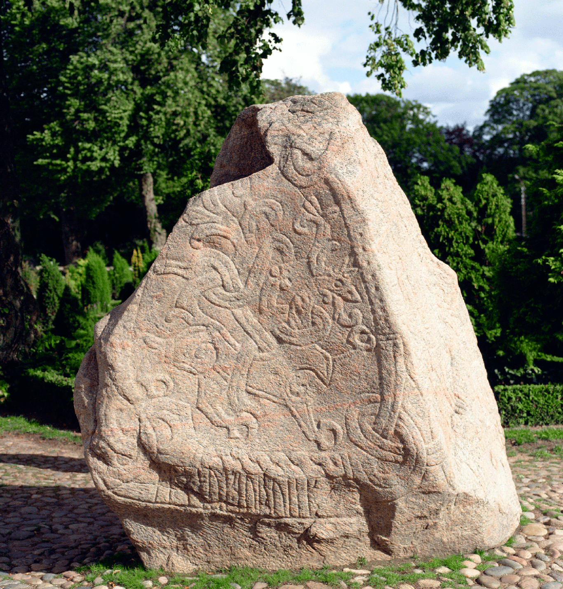

Introducerea creștinismului
După botezul regelui danez Harald Bluetooth în 965 d.Hr., clerul creștin a devenit influent în societatea daneză.
Cu toate acestea, religia nou adoptată nu i-a transformat imediat pe danezi într-un popor pașnic. Au continuat să lupte pentru a-și menține și extinde teritoriul, cucerind părți din Germania și Estonia.

Această piatră runică din orașul Jelling este adesea numită „certificatul de naștere al Danemarcei”. Piatra a fost ridicată în secolul al X-lea de regele Harald Bluetooth în amintirea părinților săi Gorm cel Bătrân și Thyra și pentru celebrarea introducerii sale cu succes a creștinismului în Danemarca. Este pentru prima dată când numele „Danemarca” este înregistrat în scris.